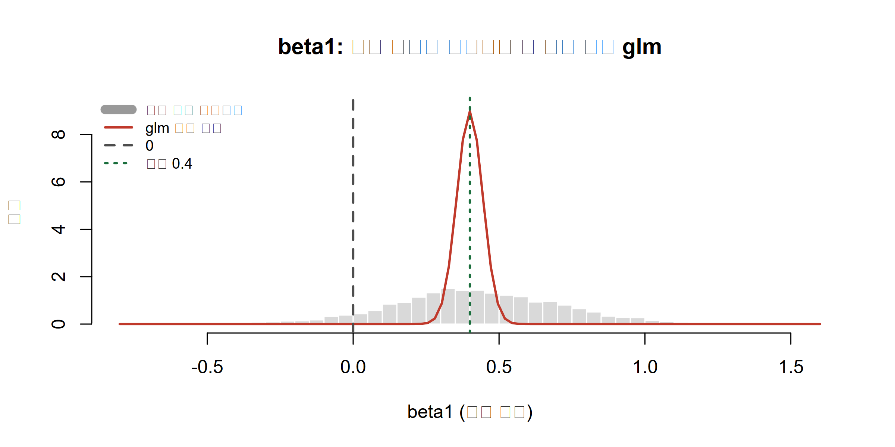

질문 정하기부터 사전예측검사, 적합, 수렴 진단, 사후예측검사, 민감도 분석, 보고까지 베이지안 워크플로우를 단일세포 세포유형 비율 예제 하나로 처음부터 끝까지 따라갑니다.
Author
Eunji Ha
Published
September 21, 2026
학습 목표
베이지안 워크플로우의 단계를 순서대로 말하고, 각 단계에 이 강의의 어느 주차 도구를 쓰는지 연결할 수 있다.
데이터 유형과 반복 단위를 보고 가능도와 계층 구조를 고를 수 있고, 가성반복(pseudoreplication)을 알아볼 수 있다.
사전예측검사로 사전분포를 고르고, 수렴 진단과 사후예측검사로 적합 결과를 점검할 수 있다.
사전 민감도와 진단 결과를 포함해 베이지안 분석의 방법 문단을 쓸 수 있다.
어디서부터 시작하나
지난 12주 동안 켤레 사전, MCMC, 계층 모형, fine-mapping, HMM까지 도구를 하나씩 모았습니다. 막상 자기 데이터를 앞에 두면 질문이 달라집니다. 어떤 가능도를 쓸지, 사전분포는 무엇으로 할지, 체인이 수렴했는지, 결과를 논문에 어떻게 적을지. 이번 주는 이 질문들에 순서를 매기는 틀을 세우고, 단일세포 데이터의 세포유형 비율 비교라는 예제 하나를 처음부터 끝까지 따라갑니다. 미리 말해 두면, 모형을 돌리는 데 드는 시간보다 점검하는 데 드는 시간이 훨씬 깁니다. 이번 예제에서도 첫 번째 모형은 가성반복으로 과신하고, 두 번째 모형의 첫 표집기는 수렴하지 못합니다. 그것을 잡아내는 것이 워크플로우의 역할입니다.
베이지안 워크플로우
Gelman et al. (2020, “Bayesian Workflow”, arXiv:2011.01808)은 베이지안 분석을 모형 하나를 적합하는 일이 아니라 모형을 만들고, 점검하고, 고치는 과정 전체로 봅니다. 아래 표는 그 단계를 이 강의의 도구와 연결한 것이고, Gabry et al. (2019, JRSS-A)은 각 단계를 그림으로 점검하는 방법을 정리했습니다.
워크플로우는 한 방향으로 흐르는 파이프라인이 아니라 고리입니다. 사전예측이 말이 안 되면 사전분포로, 수렴 진단이 실패하면 모수화나 표집기로, PPC가 실패하면 생성 모형으로 되돌아갑니다. 되돌아간 이력 자체가 분석의 일부이므로 기록해 두어야 합니다.
수식으로 보기: 사전예측과 사후예측은 같은 시뮬레이션이다
생성 모형은 결합분포 \(p(y, \theta) = p(y \mid \theta)\,p(\theta)\) 하나입니다. 사전예측분포는 \(p(\tilde y) = \int p(\tilde y \mid \theta)\,p(\theta)\,d\theta\), 사후예측분포는 \(p(y^{\text{rep}} \mid y) = \int p(y^{\text{rep}} \mid \theta)\,p(\theta \mid y)\,d\theta\)이고, 둘 다 “\(\theta\)를 뽑고 → 그 \(\theta\)로 데이터를 뽑는다”로 시뮬레이션합니다. 차이는 \(\theta\)를 사전분포에서 뽑느냐 사후 표본에서 뽑느냐뿐입니다. 그래서 가짜 데이터를 만드는 함수 하나를 짜 두면 3·4·7단계에 모두 씁니다.
데이터 유형에 맞는 가능도 고르기
가능도는 (1) 데이터가 가질 수 있는 값의 범위, (2) 반복 단위, (3) 분산이 기본 가능도가 허용하는 것보다 큰지로 고릅니다. 특히 “관측 하나가 무엇인가”와 “독립적으로 반복되는 단위가 무엇인가”를 따로 물어야 합니다. 세포 하나하나는 환자 안에서 이항처럼 행동해도, 환자마다 기저 비율이 다르면 환자를 넘어가는 순간 이항 분산보다 훨씬 큰 변동이 생깁니다. 과산포의 원인은 대개 이 반복 단위에 있습니다.
환자 12명(대조 6, 질환 6)의 말초혈액 단일세포 RNA-seq을 클러스터링하고 세포유형을 주석했다고 합시다. 환자 \(i\)의 전체 세포 \(n_i\)개 중 관심 세포유형이 \(y_i\)개입니다. 질문은 “질환군에서 이 세포유형의 비율이 더 높은가”이고, 추정 대상은 질환 대 대조의 로짓 차이 \(\beta_1\), 곧 오즈비 \(e^{\beta_1}\)입니다. 아래는 참값을 알고 만든 가상의 데이터입니다.
set.seed(24)n_pat <-12; disease <-rep(c(0, 1), each =6) # 대조 6명, 질환 6명patient <-paste0(ifelse(disease ==1, "D", "C"), c(1:6, 1:6))n_cell <-round(exp(runif(n_pat, log(300), log(3000)))) # 환자별 전체 세포 수b0_true <--1.7; b1_true <-0.4; tau_true <-0.5# 참값: 나중에 복원되는지 확인a_true <- b0_true + b1_true * disease +rnorm(n_pat, 0, tau_true) # 환자별 로짓 a_iy <-rbinom(n_pat, n_cell, plogis(a_true)) # 관심 세포유형의 세포 수dat <-data.frame(patient, disease, n = n_cell, y, prop =round(y / n_cell, 3))print(dat, row.names =FALSE); cat("전체 세포 수:", sum(n_cell), "\n")
모형은 \(\text{logit}\,\theta_i = \beta_0 + \beta_1 x_i + u_i\), \(u_i \sim \mathcal{N}(0, \tau^2)\)입니다(\(x_i\)는 질환 여부). 모든 \(\beta\)에 \(\mathcal{N}(0, 10^2)\)을 주면 “아무것도 가정하지 않은” 것처럼 보입니다. 사전분포에서 모수를 뽑아 새 환자 한 명의 \(\theta\)를 만들어 보면 그렇지 않다는 것이 드러납니다.
set.seed(1); n_sim <-20000prior_theta <-function(m0, s0, s1, s_tau) { # 사전에서 모수를 뽑아 새 환자 한 명의 theta 계산 b0 <-rnorm(n_sim, m0, s0); b1 <-rnorm(n_sim, 0, s1); tau <-abs(rnorm(n_sim, 0, s_tau)) # |N| = 반정규 x <-rbinom(n_sim, 1, 0.5); plogis(b0 + b1 * x + tau *rnorm(n_sim)) # 질환/대조를 반반}th_vague <-prior_theta(0, 10, 10, 10) # '무정보처럼 보이는' 사전th_weak <-prior_theta(-2, 1.5, 1, 1) # 약정보 사전ext <-function(th) mean(th <0.01| th >0.99) # 0 또는 1에 달라붙은 비율round(c(extreme_vague =ext(th_vague), extreme_weak =ext(th_weak), quantile(th_weak, c(0.05, 0.5, 0.95))), 3)
넓은 사전에서는 새 환자의 75.0%가 이 세포유형이 1% 미만이거나 99% 초과라고 예측합니다. 로짓 척도에서 폭 10은 확률 척도에서 “거의 0 아니면 거의 1”이라는 강한 주장입니다(W3의 패키지 실습에서 로짓 척도 \(\mathcal{N}(0, 10^2)\)을 \(\theta\) 척도로 옮겨 본 것과 같은 현상). 약정보 사전은 다음 근거로 정했습니다. \(\beta_0 \sim \mathcal{N}(-2, 1.5^2)\): 대조군의 전형적인 비율을 \(\text{logit}^{-1}(-2) \approx 12\%\)로 두고, 평균 ±2 표준편차가 로짓 \(-5\)~\(1\), 곧 약 0.7%~73%를 덮게 해 드문 아형부터 주요 세포유형까지 허용합니다. \(\beta_1 \sim \mathcal{N}(0, 1)\): 사전 확률의 95%가 오즈비 \(e^{\pm 1.96} \approx 0.14\)~\(7.1\) 안에 있습니다. \(\tau \sim \text{Half-Normal}(0, 1)\): 환자 간 로짓 표준편차가 2를 넘기 어렵다고 봅니다. 이 사전의 사전예측 \(\theta\)는 중앙값 0.119, 90% 구간 0.006~0.767로 도메인상 말이 되는 범위에 있습니다. 로짓, 로그 배수변화처럼 비선형 변환을 거치는 모수에 “넓어서 안전한” 사전을 주면 데이터 척도에서는 극단값을 강하게 믿는 사전이 됩니다. 사전분포는 모수 표가 아니라 사전예측 데이터로 판단하십시오.
(b) 세포를 독립 관측으로 보면: 가성반복
fit_glm <-glm(cbind(y, n - y) ~ disease, family = binomial, data = dat) # 세포 하나 = 관측 하나signif(summary(fit_glm)$coefficients, 3)
Estimate Std. Error z value Pr(>|z|)
(Intercept) -1.75 0.0325 -53.7 0.00e+00
disease 0.40 0.0444 9.0 2.26e-19
\(\hat\beta_1 = 0.40\), 표준오차 0.0444, p-value \(2.26\times10^{-19}\)입니다. 그런데 그림을 보면 환자별 비율이 이항 95% 구간(오차 막대)보다 훨씬 넓게 흩어져 있고, 대조군 안에서도 0.088부터 0.199까지 벌어집니다. glm은 이 환자 간 변동을 모두 이항 잡음으로 취급하고 세포 14,143개를 독립 반복으로 셉니다. 그러나 질환 효과를 판단할 독립 단위는 환자 12명입니다. 이것이 가성반복(pseudoreplication)입니다. Squair et al. (2021, Nature Communications)은 단일세포 차등발현에서 세포를 독립 반복으로 다루는 방법들이 생물학적 반복 간 변동을 무시해 거짓 발견을 대량으로 만들고, 반복 단위별로 합친(pseudobulk) 방법이 이를 피한다는 것을 보였습니다. 세포유형 비율 비교에도 같은 논리가 적용됩니다. 질환 효과가 없는 가상 데이터로 직접 확인합니다.
set.seed(2) # beta1 = 0(질환 효과 없음)이지만 환자 간 변동 tau = 0.5는 있는 가상 데이터 200개p_null <-t(replicate(200, { y0 <-rbinom(n_pat, n_cell, plogis(-1.7+rnorm(n_pat, 0, 0.5)))c(glm_cell =summary(glm(cbind(y0, n_cell - y0) ~ disease, family = binomial))$coefficients[2, 4],t_patient =t.test(qlogis(y0 / n_cell) ~ disease)$p.value) })) # 환자당 값 하나(로짓 비율)로 비교colMeans(p_null <0.05) # 명목 수준은 0.05
glm_cell t_patient
0.745 0.055
Warning
효과가 없는데도 세포 단위 glm은 74.5%의 데이터셋에서 p < 0.05를 냅니다. 환자당 값 하나로 요약해 비교하면 5.5%로 명목 수준 근처입니다(데이터셋 200개라 이 비율의 몬테카를로 표준오차는 약 1.5%p입니다). 가성반복은 베이지안이냐 빈도주의냐의 문제가 아니라 모형 구조의 문제입니다. 세포를 독립으로 둔 베이지안 이항 모형도 똑같이 과신하고, 빈도주의에서도 환자 랜덤효과를 넣은 일반화 선형 혼합모형이나 환자별 요약으로 고칩니다. 아래 계층 모형은 환자 효과 \(u_i\)로 이 구조를 모형에 넣습니다.
표집기는 W5의 확률보행 메트로폴리스를 한 번에 한 성분씩 적용하는 성분별(component-wise) 버전입니다. 모수 15개를 차례로 하나씩 움직입니다. 체인 4개를 서로 흩어진 초기값에서 시작하고, 체인당 4,000회 중 앞 1,000회를 워밍업으로 버립니다. 먼저 W7에서 권한 비중심화로 돌립니다.
진단 함수는 W6의 코드를 한 글자도 바꾸지 않고 복사합니다. 기준은 Vehtari et al. (2021, Bayesian Analysis)의 권고인 R-hat < 1.01, 그리고 체인 4개 기준 bulk-ESS 400 이상(체인당 약 100)입니다. W6의 함수들은 순위 정규화(rank normalization)를 하지 않은 기본형이라 posterior 패키지의 rhat, ess_bulk와 값이 조금 다를 수 있습니다.
# split-R-hat: 각 체인을 반으로 쪼개 체인 수를 2배로 만든 뒤 계산합니다split_rhat <-function(sims) { sims <-as.matrix(sims); n <-nrow(sims); h <-floor(n /2) sp <-cbind(sims[1:h, , drop =FALSE], sims[(n - h +1):n, , drop =FALSE]) n_s <-nrow(sp) w <-mean(apply(sp, 2, var)) # 체인 내 분산 W b <- n_s *var(colMeans(sp)) # 체인 간 분산 Bsqrt((((n_s -1) / n_s) * w + b / n_s) / w)}var_plus_hat <-function(sims) { # W 와 체인 간 분산을 섞은 var^+ sims <-as.matrix(sims); n <-nrow(sims); m <-ncol(sims) ((n -1) / n) *mean(apply(sims, 2, var)) +if (m >1) var(colMeans(sims)) else0}# ESS: split + 시차 0부터 둘씩 묶은 Geyer 초기 단조 수열ess_basic <-function(sims) { sims <-as.matrix(sims); n0 <-nrow(sims); h <-floor(n0 /2) sp <-cbind(sims[1:h, , drop =FALSE], sims[(n0 - h +1):n0, , drop =FALSE]) # split n <-nrow(sp); m <-ncol(sp); w <-mean(apply(sp, 2, var)); var_plus <-var_plus_hat(sp)if (!is.finite(var_plus) || var_plus <=0) return(NA_real_) acov <-sapply(seq_len(m), function(j) # 체인별 자기공분산을 시차 n-1 까지acf(sp[, j], lag.max = n -1, type ="covariance", plot =FALSE)$acf[, 1, 1]) rho <-1- (w -rowMeans(as.matrix(acov))) / var_plus # rho[k] 는 시차 k-1 의 자기상관 n_pair <-floor(length(rho) /2) # 시차 0부터 둘씩: (r0+r1), (r2+r3), ... pair <-cummin(rho[2* (1:n_pair) -1] + rho[2* (1:n_pair)]) # 초기 단조 수열 keep <-which(pair <0)[1] -1; if (is.na(keep)) keep <- n_pair # 첫 음수 직전까지 tau <--1+2* (if (keep >=1) sum(pair[1:keep]) else0) m * n /max(tau, 1/log10(m * n)) # mn / tau. 상한 없음(반상관이면 ESS > mn)}diag_tab <-function(arr) t(sapply(c(beta0 =1, beta1 =2, log_tau =3), function(k) c(rhat =split_rhat(arr[, k, ]), ess =ess_basic(arr[, k, ]))))round(diag_tab(arr_nc), 3)
round(range(1/sqrt(y * (1- y / n_cell))), 2) # 환자별 로짓 a_i의 대략적 표준오차 범위
[1] 0.05 0.13
비중심화는 기준을 크게 벗어납니다. R-hat이 1.343, 1.149, 1.070이고 \(\beta_0\)의 ESS는 표본 12,000개 중 약 10개입니다. 이유는 데이터에 있습니다. 환자마다 세포가 수백~수천 개라 환자별 로짓 \(a_i\)는 데이터만으로 표준오차 0.05~0.13 안에 못 박힙니다. 비중심화 좌표에서 \(\beta_0\) 하나만 움직이면 12개의 \(a_i\)가 한꺼번에 움직여 기각되므로, \(\beta_0\)와 \(\eta_i\)가 함께 움직여야만 하는 좁은 능선이 생깁니다. 한 번에 한 성분씩 움직이는 표집기는 이런 능선에서 기어갑니다(W5에서 본, 상관이 크면 깁스가 기어가는 현상). 제안폭을 키우거나 줄여서는 풀리지 않는 기하의 문제입니다. W7에서 적었듯 그룹별 자료가 많으면 중심화가 낫습니다. 중심화에서는 \(a_i\)가 각자 자기 데이터로 정해지고, \((\beta_0, \beta_1, \tau)\)는 12개의 \(a_i\)에 대한 정규 회귀처럼 움직입니다.
같은 표집기, 같은 반복 수에서(제안 폭과 초기값은 각 모수화에 맞게 따로 정함) 중심화는 R-hat이 모두 1.004 이하, ESS가 964 이상으로 기준을 통과합니다. 트레이스에서도 비중심화의 네 체인은 천천히 표류하며 한동안 서로 다른 높이에 머물고, 중심화의 네 체인은 같은 띠를 빠르게 섞어 덮습니다.
Tip
모수화는 정답이 하나로 정해져 있지 않습니다. \(\tau\)가 0 근처이거나 그룹별 자료가 적으면 비중심화가(W7), 그룹별 자료가 많아 각 그룹 모수가 데이터로 잘 정해지면 중심화가 낫습니다(이번 예제). 어느 쪽인지 미리 모를 때 알려 주는 것이 수렴 진단입니다. 흩어진 초기값의 여러 체인이 없었다면 이 실패를 알아채기 어려웠을 것입니다.
(e) 사후예측검사: 환자 간 과산포
검정통계량은 군별 합동 비율 주변의 피어슨 카이제곱입니다. 데이터가 순수한 이항이면 대략 자유도 \(12 - 2 = 10\) 근처 값이 나옵니다. 단순 이항 모형의 사후는 평평한 사전 하 라플라스 근사(W4), 곧 \(\mathcal{N}(\hat\beta, \widehat{\text{Var}}(\hat\beta))\)에서 뽑습니다. 계층 모형은 사후 표본마다 새 환자 효과를 뽑아 재현합니다. 같은 환자의 \(a_i\)를 그대로 쓰면 관측 비율을 거의 복사하므로 환자 간 변동을 검사하는 힘이 약합니다.
관측값은 \(T(y) = 366.0\)입니다. 단순 이항 모형이 만든 가짜 데이터 1,000개는 중앙값 9.3, 최댓값 30.6으로 한 번도 관측값에 닿지 못합니다(베이지안 p-value 0.000). 계층 모형의 사후예측분포는 관측값을 가운데 두고(p = 0.463) 넓게 퍼져 있습니다. 단순 이항 모형은 데이터의 가장 중요한 특성인 환자 간 변동을 재현하지 못하므로, 그 모형의 p-value는 해석할 이유가 없습니다.
hist(b1_d, breaks =60, freq =FALSE, col ="grey85", border ="white", xlim =c(-0.8, 1.6), ylim =c(0, 1.05*dnorm(0, 0, se_g)),main ="beta1: 계층 모형의 사후분포 대 세포 단위 glm", xlab ="beta1 (로짓 차이)", ylab ="밀도")curve(dnorm(x, coef(fit_glm)[2], se_g), add =TRUE, col ="#c0392b", lwd =2)abline(v =c(0, b1_true), lty =c(2, 3), col =c("grey30", "#1a6e3c"), lwd =2)legend("topleft", bty ="n", cex =0.8, legend =c("계층 모형 사후분포", "glm 정규 근사", "0", "참값 0.4"), col =c("grey60", "#c0392b", "grey30", "#1a6e3c"), lwd =c(8, 2, 2, 2), lty =c(1, 1, 2, 3))

점추정은 두 방법이 거의 같지만(0.415 대 0.400) 불확실성은 전혀 다릅니다. 계층 모형의 95% 신용구간은 \(-0.194\)~\(0.997\), 오즈비로 0.82~2.71이고, glm의 95% 신뢰구간(오즈비 1.37~1.63)보다 몇 배 넓습니다. \(\Pr(\beta_1 > 0 \mid y) = 0.925\)이므로 “질환군에서 이 세포유형 비율이 높을 가능성이 크지만, 환자 12명으로는 효과가 없거나 작을 가능성을 배제할 수 없다”가 데이터가 말하는 전부입니다. 참값 \((\beta_0, \beta_1, \tau) = (-1.7, 0.4, 0.5)\)는 모두 95% 구간 안에 있습니다. 데이터 한 벌로 한 이 확인이 워크플로우 4단계의 가장 단순한 형태이고, 사전에서 참값을 여러 번 뽑아 같은 확인을 반복하면서 참값의 사후 순위가 균등한지 보는 것이 SBC(simulation-based calibration; Talts et al. 2018)입니다.
(g) 민감도 분석
사전분포만 바꾸고 가능도는 그대로면 다시 돌리지 않아도 됩니다. 기존 사후 표본에 가중치 \(w \propto p_{\text{new}}(\theta) / p_{\text{old}}(\theta)\)를 주는 중요도 재가중(W4의 중요도표집)으로 새 사후를 얻습니다. 가중치가 한쪽으로 쏠리면(가중치 ESS가 작으면) 이 근사를 믿을 수 없으므로 그때는 다시 돌려야 합니다.
\(\tau\) 사전 척도를 0.5~2로 바꿔도 \(\Pr(\beta_1 > 0 \mid y)\)는 0.922~0.935에서 움직입니다. \(\beta_1\) 사전 척도를 0.5로 좁히면 중앙값이 0.415에서 0.338로 0 쪽으로 당겨지지만, 척도 10까지 넓혀도 결론은 같습니다. 가중치 ESS는 모두 12,000개 중 10,900개 이상이라 재가중 근사도 믿을 만합니다. 이 표를 논문 부록에 그대로 싣습니다.
모델 점검 체크리스트
이 챕터의 핵심 산출물입니다. 자기 데이터 분석의 각 시점에서 아래 항목에 답을 적어 두십시오.
Kruschke (2021, Nature Human Behaviour)의 베이지안 분석 보고 지침(BARG)을 참고해 이번 예제의 방법(Methods) 문단을 쓰면 다음과 같습니다. 결과 문단에는 \(\beta_1\)의 사후 중앙값과 95% 신용구간, 오즈비, \(\Pr(\beta_1 > 0 \mid y)\), 민감도 표를 싣습니다.
환자별 관심 세포유형 수 \(y_i\)를 전체 세포 수 \(n_i\)에 대한 이항분포로 모형화하고, 로짓 비율에 질환 여부의 고정효과 \(\beta_1\)과 환자 랜덤효과 \(u_i \sim \mathcal{N}(0, \tau^2)\)를 두었다. 사전분포는 \(\beta_0 \sim \mathcal{N}(-2, 1.5^2)\)(대조군 비율 약 12%, 0.7%~73% 허용), \(\beta_1 \sim \mathcal{N}(0, 1)\)(오즈비 95% 사전 범위 0.14~7.1), \(\tau \sim \text{Half-Normal}(0, 1)\)로 정했고, 사전예측 비율이 도메인상 타당한 범위에 있음을 확인했다. 사후분포는 성분별 확률보행 메트로폴리스로 중심화 모수화에서 4개 체인, 체인당 4,000회(앞 1,000회 워밍업 제외)를 흩어진 초기값에서 표집했다. \(\beta_0, \beta_1, \log\tau\)에서 순위 정규화를 하지 않은 split-R-hat ≤ 1.004, ESS ≥ 964로 Vehtari et al. (2021)의 기준(R-hat < 1.01, ESS ≥ 400)을 충족했다. 사후예측검사에서 환자 간 과산포 통계량은 계층 모형에서 재현되었고(베이지안 p = 0.46) 세포 단위 이항 모형에서는 재현되지 않았다. \(\tau\)의 사전 척도를 0.5~2, \(\beta_1\)의 사전 척도를 0.5~10 범위에서 바꾼 민감도 분석(중요도 재가중)에서 \(\Pr(\beta_1 > 0 \mid y)\)는 0.903~0.935였다. 분석 코드와 난수 시드는 부록에 첨부한다.
실습: 패키지로 풀기
CI 환경에 brms가 없어 실행하지 않습니다(eval: false). brms는 Stan의 NUTS로 표집하고 집단 수준 효과를 비중심화로 씁니다. HMC도 모수화에 따라 효율이 달라지므로 같은 진단을 거칩니다.
한 가지 주의할 점은, brms가 예측변수를 내부에서 중심화하므로 class = Intercept 사전은 disease 평균(0.5)에서의 절편에 걸린다는 것입니다. 우리 모형의 \(\beta_0\)에 정확히 걸려면 식을 y | trials(n) ~ 0 + Intercept + disease + (1 | patient)로 쓰고 prior(normal(-2, 1.5), class = b, coef = Intercept)를 줍니다.
library(brms)pri <-c(prior(normal(-2, 1.5), class = Intercept), prior(normal(0, 1), class = b), prior(normal(0, 1), class = sd)) # sd는 반정규fit_prior <-brm(y |trials(n) ~ disease + (1| patient), family =binomial(), data = dat,prior = pri, sample_prior ="only", chains =4, seed =1) # 사전예측검사pp_check(fit_prior)fit <-brm(y |trials(n) ~ disease + (1| patient), family =binomial(), data = dat, prior = pri, chains =4, seed =1)summary(fit) # Rhat, Bulk_ESS, Tail_ESS. 발산 전이가 있으면 경고가 함께 나옴pp_check(fit) # 사후예측검사loo(fit) # 한 행 = 환자 한 명이라 LOO가 곧 환자 하나 빼기. 관측마다 u_i가 있어 Pareto k가 클 수 있음
연습문제
문제 1. 넓은 절편 사전의 사전예측
\(\beta_1\)과 \(\tau\)의 사전은 약정보 사전 그대로 두고 \(\beta_0\)의 사전만 \(\mathcal{N}(0, 10^2)\)로 되돌렸을 때, 사전예측 \(\theta\)가 0.01 미만 또는 0.99 초과인 비율을 계산하십시오. \(\beta_0\)만 있을 때의 이론값과 비교하십시오.
절편 하나만 넓혀도 새 환자의 약 65%가 0 또는 1에 붙습니다. \(\beta_0\)만 있을 때의 이론값은 \(\Pr(|\beta_0| > \text{logit}(0.99)) = 2\Phi(-4.595/10)\)이고, \(\beta_1\)과 \(u_i\)가 더해지면 로짓의 분산이 조금 커지지만 그 효과는 아주 작아서, 두 값의 차이는 대부분 몬테카를로 오차(약 0.003) 수준입니다. 약정보 사전의 8.6%와 비교하면, 사전예측을 망가뜨리는 데는 넓은 모수 하나면 충분합니다.
문제 2. 환자 수를 줄이면
C1~C3, D1~D3의 3+3명만 남기고 계층 모형을 다시 적합해 \(\beta_1\)의 95% 신용구간 폭과 \(\Pr(\beta_1 > 0 \mid y)\)가 어떻게 바뀌는지 보십시오. 같은 자료의 세포 단위 glm p-value도 확인하십시오.
width_6v6 width_3v3 ratio pr_6v6 pr_3v3
1.192 1.654 1.388 0.925 0.707
signif(summary(glm(cbind(y, n - y) ~ disease, family = binomial, data = dat[sub, ]))$coefficients[2, ], 3)
Estimate Std. Error z value Pr(>|z|)
3.81e-01 7.01e-02 5.43e+00 5.71e-08
진단을 통과한 것을 확인한 뒤 보면 구간 폭이 약 1.4배로 넓어지고 \(\Pr(\beta_1 > 0 \mid y)\)는 0.925에서 0.707로 떨어집니다. 질환 효과의 표준오차는 대략 군당 환자 수의 제곱근에 반비례하므로 환자를 절반으로 줄이면 폭이 \(\sqrt{2} \approx 1.41\)배쯤 됩니다. 세포 단위 glm은 여전히 p-value가 \(10^{-8}\) 수준입니다. 환자마다 세포는 수백~수천 개씩 그대로 남아 있기 때문입니다. 설계 단계에서 늘려야 하는 것은 세포 수가 아니라 환자 수입니다.
문제 3. 자기 데이터용 체크리스트 쓰기
자기 연구 데이터 하나를 골라 위 체크리스트 13개 항목에 한두 줄씩 답을 적으십시오. 특히 2번(반복 단위), 4번(사전예측), 8번(PPC 통계량)을 구체적으로 쓰십시오.
풀이
예시 답안입니다. 노화 마우스 공간전사체에서 특정 세포유형이 차지하는 스팟 비율을 비교한다고 합시다(젊은 마우스 4마리, 늙은 마우스 4마리, 마우스당 절편 2~3장, 절편당 스팟 수천 개). 2번: 반복 단위는 마우스 8마리입니다. 절편은 마우스 안에, 스팟은 절편 안에 중첩되므로 \(\text{logit}\,\theta_{ms} = \beta_0 + \beta_1 x_m + u_m + v_{ms}\)처럼 마우스 효과 \(u_m\)과 절편 효과 \(v_{ms}\)를 모두 둡니다. 스팟을 독립으로 세면 이번 예제보다 심한 가성반복이 됩니다. 4번: 새 마우스의 비율과 마우스 간·절편 간 변동이 예비 데이터나 문헌의 범위에 드는지 사전예측으로 봅니다. 5번: 마우스가 8마리뿐이라 \(\tau_{\text{mouse}}\)가 가짜 데이터에서 복원되는지, 사전에 얼마나 끌려가는지 먼저 확인합니다. 8번: PPC 통계량으로 마우스 간 분산과 같은 마우스 안 절편 간 분산을 따로 씁니다. 한 층만 재현해서는 부족합니다. 9번: \(\tau_{\text{mouse}}\) 사전 척도를 바꿔 \(\Pr(\beta_1 > 0 \mid y)\)가 움직이는지 봅니다.
정리
베이지안 분석은 질문 → 생성 모형 → 사전예측검사 → 가짜 데이터 복원 → 적합 → 수렴 진단 → PPC → 민감도 → 모형 비교 → 보고로 이어지는 고리이며, 점검에서 실패하면 앞 단계로 돌아갑니다.
가능도는 값의 범위, 반복 단위, 과산포로 고릅니다. 세포처럼 관측 단위가 반복 단위 안에 중첩되면 반복 단위의 효과를 모형에 넣어야 하고, 그러지 않으면 가성반복 때문에 효과가 없어도 대부분 유의하게 나옵니다.
로짓 척도에서 넓은 사전은 무정보가 아니라 “거의 0 아니면 거의 1”이라는 주장입니다. 사전분포는 사전예측 데이터로 판단합니다.
비중심화가 항상 나은 것은 아닙니다. 그룹별 자료가 많으면 중심화가 낫고, 그것을 알려 주는 것은 흩어진 초기값에서 돌린 여러 체인의 R-hat과 ESS입니다.
결과는 사후 중앙값과 신용구간, 관심 가설의 사후확률, 민감도 표, 진단값과 함께 보고합니다(Kruschke 2021).
다음 시간
이번 주로 강의를 마칩니다. 다음 공부로는 워크플로우 전체를 다룬 Gelman et al. (2020)을 끝까지 읽고, 모형 점검과 계층 모형을 더 깊게 보려면 BDA3(Gelman et al. 2013), 직관과 코드로 다시 쌓으려면 Statistical Rethinking 2판(McElreath 2020), Stan으로 옮기려면 Stan 사용자 가이드를 권합니다. Part 2의 fine-mapping, colocalization, HMM, CNV calling은 각 방법의 원 논문을 이 체크리스트를 옆에 두고 다시 읽어 보십시오.